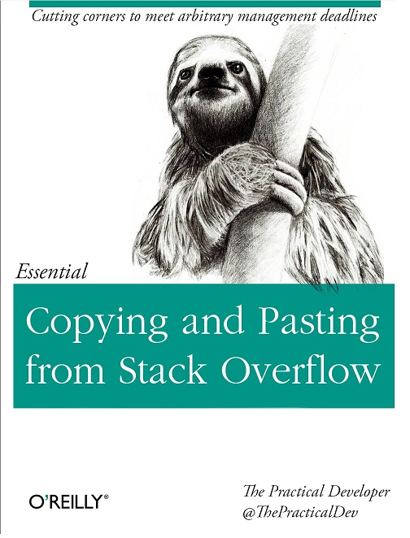
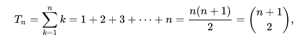

Concurrent data structures
with examples in Azure Service Bus
Introduction
- The examples in this presentation use the WindowsAzure.ServiceBus approach to illustrate a problem. The package should no longer be used. If you plan to use Azure Service Bus use Microsoft.Azure.ServiceBus or even better Azure.Messaging.ServiceBus
- For brevity and readability
ConfigureAwait(false)has been left out and opionated braces placement has been used (You have been warned!) - If you see spelling mistakes, I accept Pull Requests ;)
Why am I telling you this?

Stackoverflow Law: Good coders borrow, great coders steal. The Internet
Receive/Complete messages
1: 2: 3: 4: 5: 6: 7: 8: 9: 10: 11: 12: |
|
- MessagingFactory = Dedicated TCP connection --> faaast!
- Every
CompleteAsyncis a dedicated call to the cloud --> slooow!
Can we do better?
1: 2: 3: 4: 5: 6: |
|
We need someone to complete the tokens
1: 2: 3: 4: 5: 6: 7: 8: 9: 10: 11: 12: 13: |
|
Under concurrency, things might spin
1: 2: 3: 4: |
|
NumberOfReceivers*ConcurrencyPerReceiverwill push to the concurrent stack
Are all of the new concurrent collections lock-free?: ConcurrentQueue
and ConcurrentStack are completely lock-free in this way. They will never take a lock, but they may end up spinning and retrying an operation when faced with contention Old Post
Under load we might not keep up
- Concurrent receivers can fill the concurrent stack faster with lock tokens than our completion loop manage to complete
- Increased change of lock lost problems under peek lock
Let's fix that
1: 2: 3: 4: 5: 6: 7: 8: 9: 10: 11: 12: 13: 14: 15: 16: |
|
- Contention problem is even worse, multiple background completion operations are competing on the concurrent stack
- Same
Task.Delaywithout jitter causes a lot to wake up and potentially not succed, wasting a lot of resources
There is a dragon hiding here
1:
|
|
- Complete always on the same receiver
- Works with SBMP (NetMessaging) but fails with AMQP as a transport type
Surely we can fix that too?
1: 2: 3: 4: 5: 6: 7: 8: 9: 10: 11: 12: 13: 14: 15: 16: |
|
... and the completion
1: 2: 3: 4: 5: 6: 7: 8: 9: 10: 11: 12: 13: 14: 15: 16: 17: |
|
What have we achieved?
- Contention is mostly gone
-
Completion is guaranteed to use the same receiver to complete
but...
- Still wasting a lot of resources due to the wakeup and idle pattern
- Code doesn't really have the necessary elasticity
Multi Producer Concurrent Consumer
- Make sure messages are only completed on the receiver they came from
- Reduce the number of threads used when the number of clients is increased
- Autoscale up under heavy load
- Scale down under light load
- Minimise the contention on the underlying collections used
- Be completely asynchronous
- Implements a push based model from the producer and consumer perspective
- Respect the maximum batch sized defined by the client of the component or a predefined push interval
- Provide FIFO semantics instead of LIFO
- Be as lock-free as possible

1: 2: 3: 4: 5: 6: 7: 8: 9: 10: 11: 12: 13: |
|
Pre-allocate and reuse
- Allocate as much as you need upfront
- Allocate on-demand when you need it
1: 2: 3: 4: 5: 6: 7: 8: 9: 10: 11: 12: 13: 14: 15: 16: |
|
Let's get started
1: 2: 3: 4: 5: 6: 7: 8: 9: 10: 11: 12: 13: 14: 15: |
|
- State based overload helps to avoid closure capturing
It's time to push
1: 2: 3: 4: 5: 6: 7: 8: 9: 10: 11: 12: |
|
- Achievement: Push items in batches based on the push interval
Push it real good
1: 2: 3: 4: 5: 6: 7: 8: 9: 10: 11: 12: |
|
- Simple tradeoff: Global counter to reduce complexity
There is enough to push
1: 2: 3: 4: 5: 6: 7: 8: 9: 10: 11: 12: 13: 14: 15: 16: 17: |
|
Push it in batches
1: 2: 3: 4: 5: 6: 7: 8: 9: 10: 11: 12: 13: 14: 15: 16: |
|
Now it gets a little bit crazy
1: 2: 3: 4: 5: 6: 7: 8: 9: |
|
1: 2: 3: 4: 5: 6: 7: 8: 9: 10: 11: 12: 13: 14: 15: 16: 17: 18: 19: 20: 21: 22: 23: 24: |
|
1: 2: 3: 4: 5: 6: 7: 8: 9: 10: 11: 12: 13: 14: 15: 16: 17: 18: 19: 20: 21: 22: 23: 24: 25: |
|
Give me the full picture you damn code cheater
1: 2: 3: 4: 5: 6: 7: 8: 9: 10: 11: 12: 13: 14: 15: 16: 17: 18: 19: 20: 21: 22: 23: 24: 25: 26: 27: 28: 29: 30: 31: 32: 33: 34: 35: 36: 37: 38: |
|
How on earth would we test this beast?
1: 2: 3: 4: 5: 6: 7: 8: 9: 10: 11: 12: 13: 14: 15: 16: |
|
1: 2: 3: 4: 5: 6: 7: 8: 9: 10: 11: 12: 13: 14: 15: 16: 17: 18: 19: 20: 21: 22: |
|
1: 2: 3: 4: 5: 6: 7: 8: 9: 10: 11: 12: 13: 14: 15: 16: 17: 18: 19: 20: 21: 22: 23: 24: 25: 26: 27: 28: 29: 30: 31: 32: 33: |
|
1: 2: 3: |
|

1: 2: 3: 4: 5: 6: 7: 8: 9: 10: |
|
1: 2: 3: 4: 5: 6: 7: 8: 9: 10: 11: 12: 13: 14: 15: 16: 17: 18: 19: 20: 21: 22: 23: 24: |
|
Recap
- With the built-in tools we can already achieve quite nice structures for concurrent programming
- Today some of the inner workings could be replaced with
System.Threading.Channel - I encourage you got go through the tests and the code or even build it yourself from scratch, you'll learn a ton